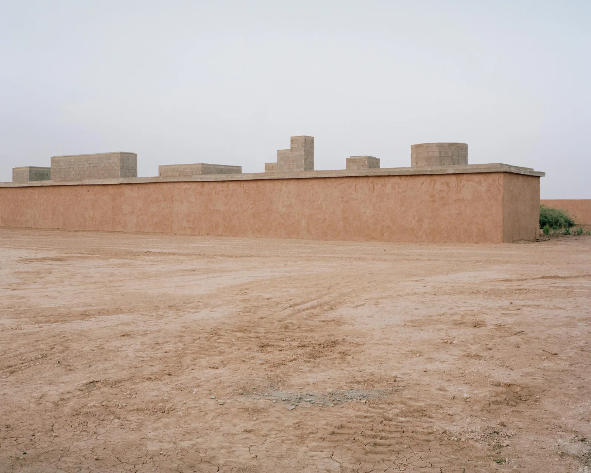
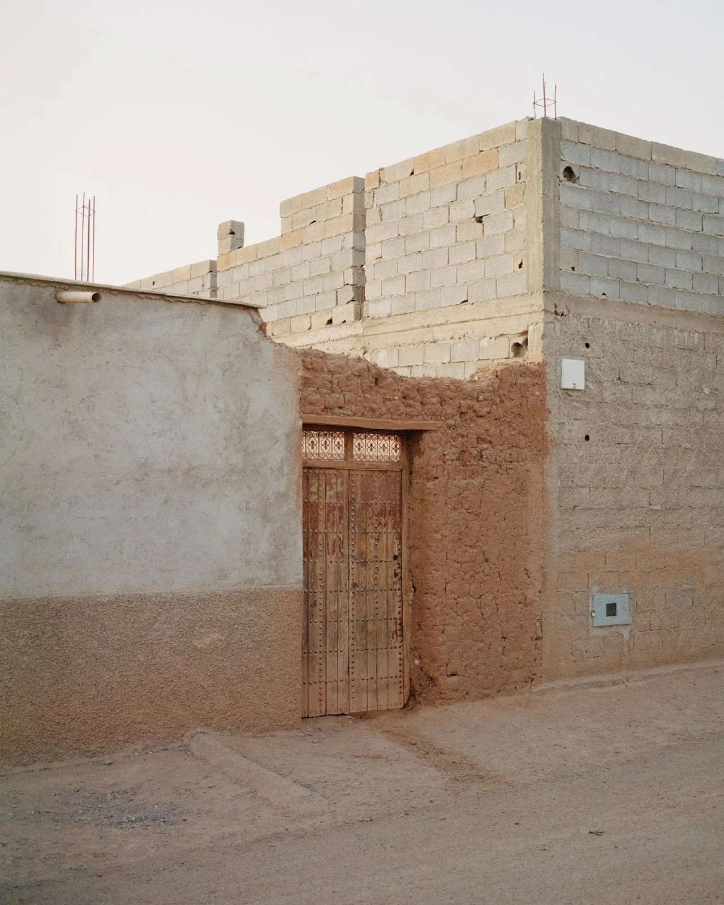
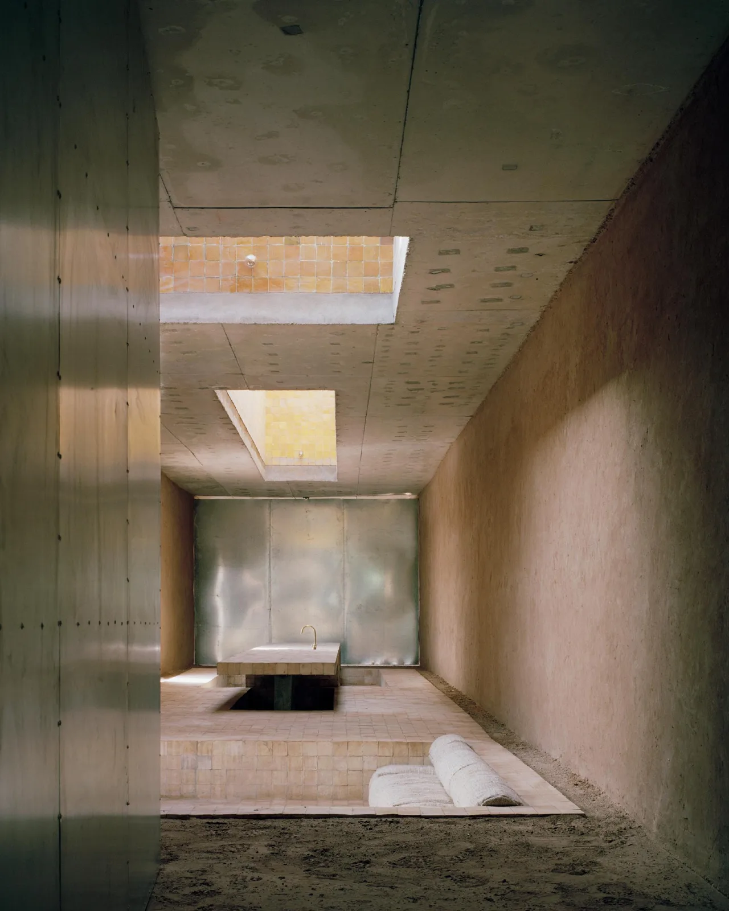
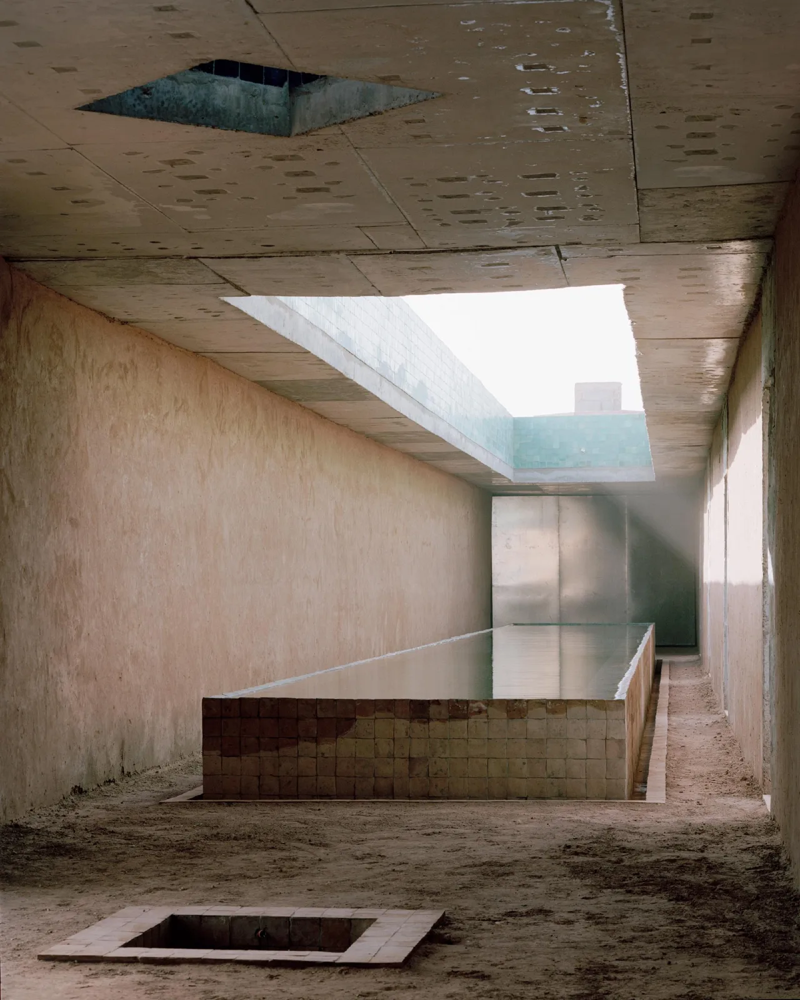
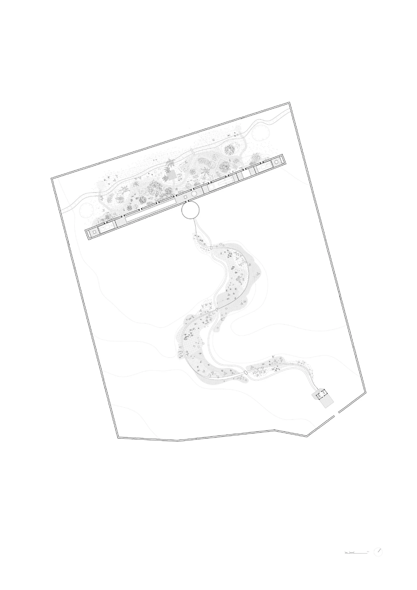
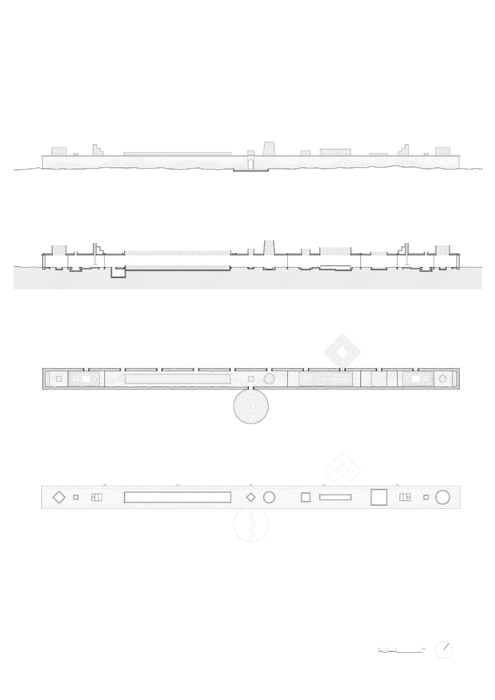

Rural house · 2024
Dar el Farina
Leopold Banchini Architects
Al Haouz, Morocco
A sequence of domestic rooms and open patios provides places to live, rest and gather. Large pivoting doors connect or separate spaces, while shaded interiors offer shelter from the desert sun.
The house follows two existing irrigation lines: a surface mesref and an underground khetara. Rammed-earth walls, controlled openings, vegetation and water shape its microclimate. Colourful locally made zellige tiles line roof openings, tinting daylight before it meets the water below.


Relevant connections
Included as an architectural reference for domestic space, material and environmental design; no mode of work is assigned.
Images and drawings / 06









